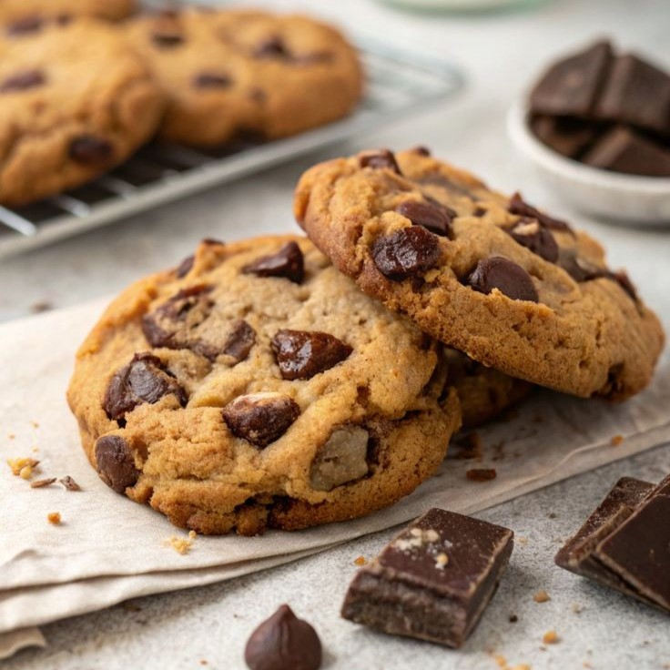

Aprenda a fazer cookies clássicos douradinhos por fora, macios por dentro e cheios de gotas de chocolate. Essa receita irresistível traz aquele sabor aconchegante de cookie caseiro recém-saído do forno. Com preparo simples e ingredientes fáceis de encontrar, os cookies são perfeitos para acompanhar um café, compartilhar com amigos ou matar a vontade de comer um doce delicioso a qualquer momento do dia.

Difícil
2h30min
Projeto para fins
acadêmicos, feito
com amor pela aluna
Lívia Faccin
Copyright © 2026 Sweet Bytes